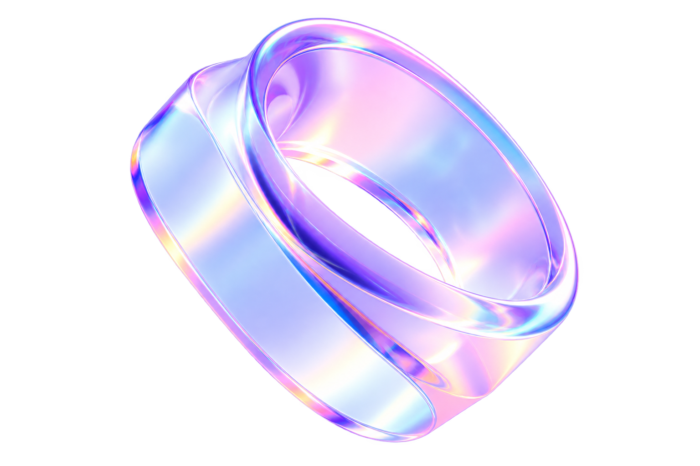

Product & Graphic Designer · Toronto, ON
Making
ideas feel.
I'm Mie — a multidisciplinary designer shaping thoughtful digital experiences and playful visual identities.
Explore selected work ↘
Selected work / 2024–2026
Curiosity, in
many forms.
Three selected projects exploring thoughtful digital experiences and playful brand identities.

 Aura
Aura

A little about me
Design with
feeling.
Built with care.
I'm Mie Duong, a Toronto-based designer with a background in advertising and graphic design, exploring the intersection of visual storytelling, product design, and systems thinking.
I love making complex things feel approachable — and ordinary things feel memorable.
More about me ↗